We'd love to hear from you. Reach out for partnerships, collaborations, or general inquiries.
Fill out the form below and we'll get back to you within 24 hours.
GF, Temple Trees Apartments
37 Venkatanarayana Road, T. Nagar
Chennai – 600017, Tamil Nadu
info@craftscouncilofindia.in
+91-44-24341456
+91-98405 41456
Monday – Friday: 10:00 AM – 5:00 PM
Saturday: Closed on 2nd & 4th Saturdays
Sunday: Closed
Our Network
The Crafts Council of India is a network of affiliated State Councils, each an autonomous registered Society working for artisans in their region.
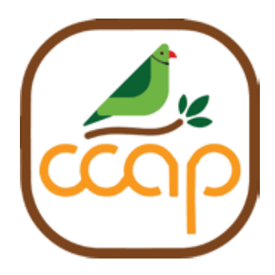
Set up in 1987, CCAP has championed the revival of Kondapalli toys, leather puppetry, and supported a group of Banjara women artisans on the outskirts of Hyderabad. Craft Tourism has been one of its more recent initiatives, showcasing Andhra Pradesh's rich weaving traditions.
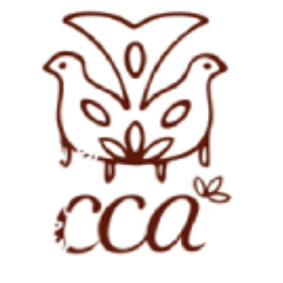
Set up in 1991, the CCA has worked tirelessly in natural dyes, Eri and Muga silk weaving, and the bamboo and cane industry. A particular contribution has been ensuring craftspeople from the North East are represented at national events across India.
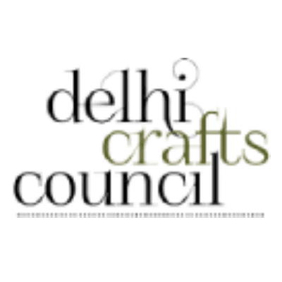
Established in 1967, the DCC predates the Chennai headquarters. It is known for reviving chiks, Sanjhi craft and Chamba Rumal. The DCC operates the Kamala retail outlet — a storehouse for innovations by young artisans — and awards the Kamaladevi Puraskar scholarship annually.
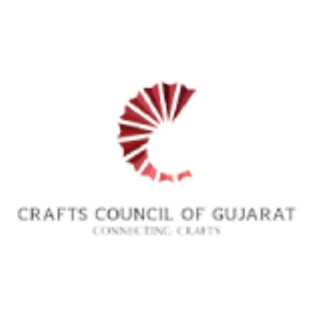
The newest addition to the network, set up in 2023 in collaboration with the Weavers Service Centre. CCG focuses on empowering artisans — especially women — through grassroots initiatives aimed at reviving traditional handloom practices through skill development and knowledge sharing.
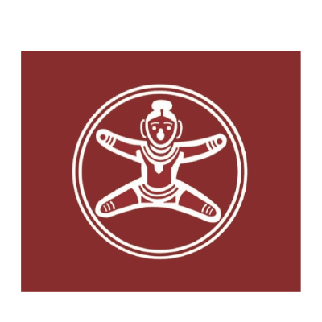
First set up in 1967 and formally registered in 1982, CCK is known for its strength in publications and large-scale events. It promoted a tie-up between Canara Bank and tool manufacturers to benefit artisans, and supports Ilkal sarees, Mysore silk, Channapatna toys, Bidri work, and stone carving from Badami and Hampi.
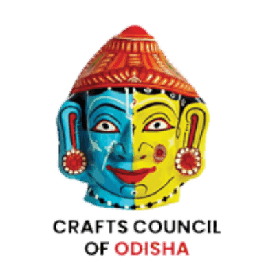
Formed in 2019 by a group of craft lovers, CCO began its activities during the pandemic by providing relief to artisans who had lost their livelihoods, and participated in virtual exhibitions organised by CCI. It represents one of India's richest craft states.
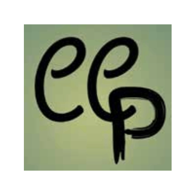
Set up in 2021, CCP builds on Puducherry's two GI-tagged craft traditions — Villianur terracotta works and Thirukannur paper mâché crafts. The council has introduced HAPPY (Handicrafts Awareness Programme for Pondicherry Youth) and is creating a craft map of artisanal work across Puducherry and Auroville.
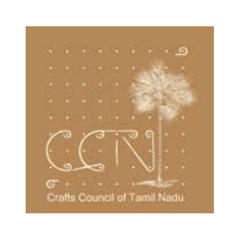
Founded in Coimbatore in 1988 with about 25 members, CCTN began by encouraging Toda embroidery, Pattamadai mat weavers and Kurumba kambili weavers. It has grown to support Kanchipuram silks, Madurai sungudi, Tanjore paintings, bronzes, Chettinad crafts, ari embroidery and pottery.
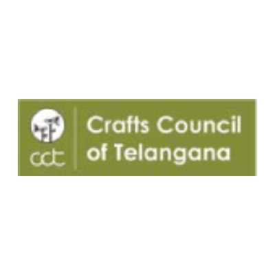
Originally part of the Crafts Council of Andhra Pradesh, CCT was set up as an independent council in 2017 following the formation of Telangana state. Today its membership stands at 167 members including many artisans, inspired by the legacy of Kamaladevi Chattopadhyay.
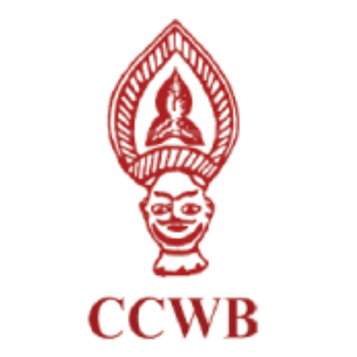
Founded in 1966 at the initiation of Kamaladevi Chattopadhyay, with Ila Palchoudhary as Founder-Member. CCWB has revived languishing crafts including kantha work, solapith, lost wax metal casting and Satgaon quilts — preserving West Bengal's vibrant cultural legacy.
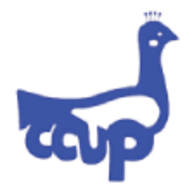
Founded in Lucknow in 1991, CCUP focuses on chikankari women artisans. Over three decades it has conducted 40+ training programmes in block printing, chikankari embroidery, Tharu patchwork and Daraz appliqué, and organised 30+ exhibitions across 20 cities in partnership with DC Handicrafts.
The Network
Kamaladevi Chattopadhyay's vision for the State Councils was work at the grassroots level — for the welfare of the artisan and for craft promotion. She believed in a federated structure with State Councils affiliated to the CCI, each working autonomously within their regions.
Their functions include documentation of local crafts, organisation of exhibitions and fairs, marketing support, advocating for artisan rights, and facilitating training and skill development. A National Meet is held every year with all Councils in attendance, followed by a Business Meet where every Council reports on their work.
The Crafts Council of India currently has 11 affiliated State Councils spread across India, with membership drawn entirely from volunteers committed to the cause of craft.
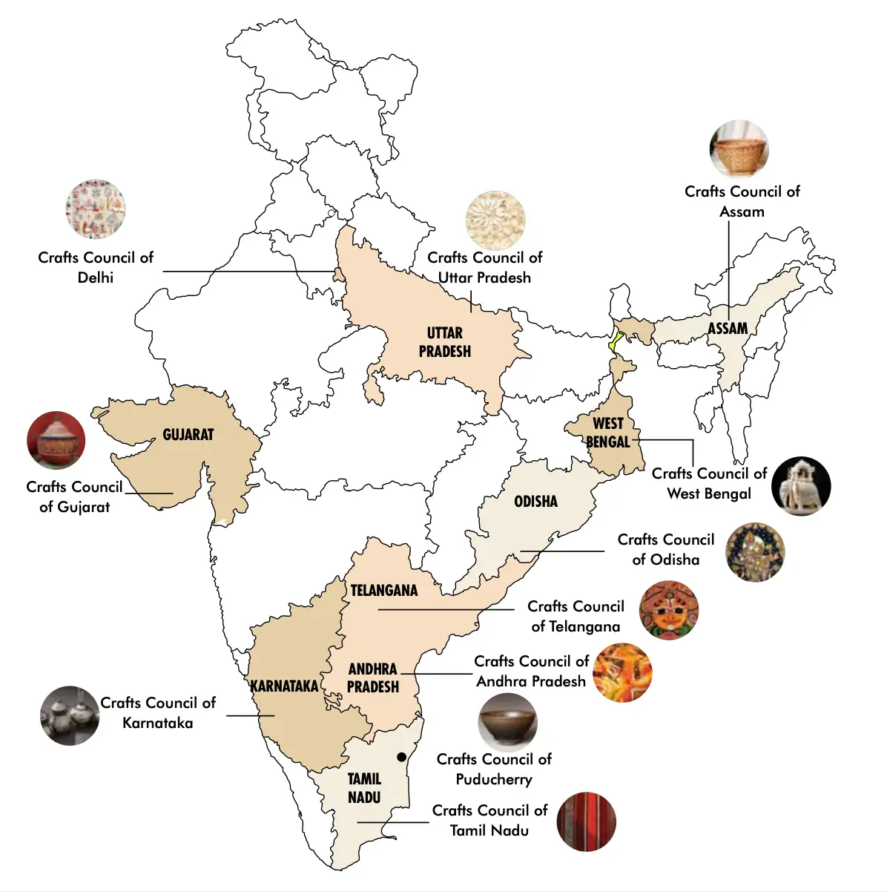